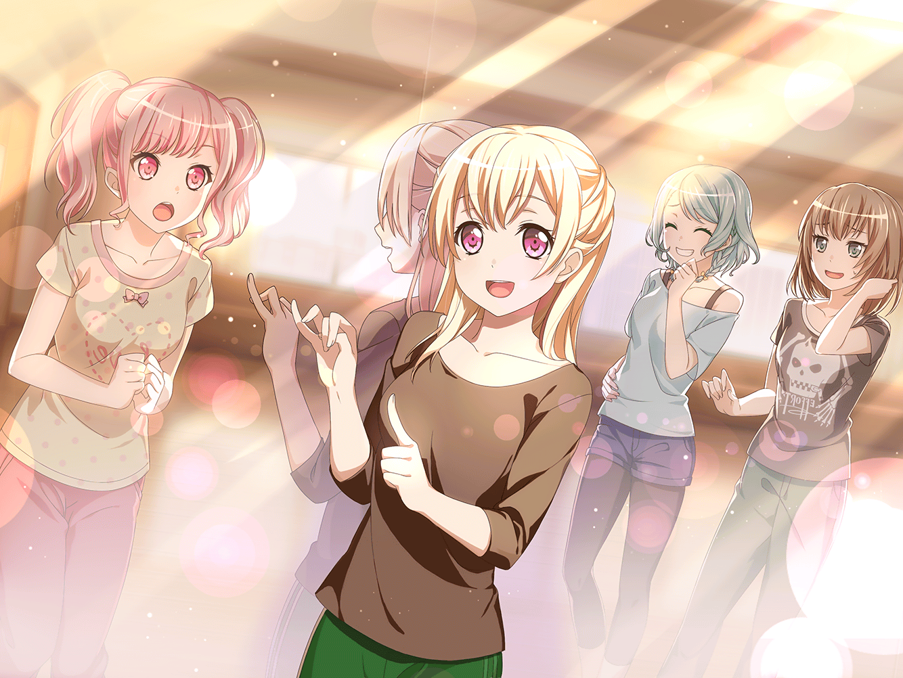

帰り道
麻弥
あの！ 千聖さんっ
千聖
麻弥ちゃん。お疲れ様。どうしたの？
麻弥
お疲れ様ですっ……あの、聞きたいことがあって
千聖
私は努力が嫌いなんじゃないかって話？
麻弥
……はい
千聖
そうね……努力は悪いことじゃないわ。
むしろ、することが前提だから、誇れるものでもないと
思ってるのが本当のところね
千聖
もし、努力だけを信じて進んだとして、うまくいかなかったら？
その先、何を信じて進んでいけばいいのかしら？
麻弥
だから……より確かなものを信じて進みたい、
そういうことですか？
麻弥
つまり、事務所のバックアップや、周囲への根回し……
成功を手にするために
千聖
……これから私のことを知っていけばいい、って
彩ちゃんは言っていたけれど今の話、彩ちゃんに言っても
一生理解してもらないかもしれないわね
麻弥
でもそれなら、どうして『努力を信じる』ような
道を選んだんですか？
千聖
彩ちゃんを見ているうちに、信じてみたくなったのかもしれない。
『努力』をね
麻弥
彩さんを……
千聖
……不思議ね。あんなに何もできなくて、本番にも弱くて、
すぐ泣くような子なのに
麻弥
あ、あはは。千聖さん、辛辣ッス……
麻弥
でも、ジブンも彩さんに勇気をもらったから、
今ここにいるんです。
彩さんには、人を変える不思議な力があるのかもしれません
麻弥
ありがとうございます。ジブン、千聖さんと話せてよかったです
千聖
こちらこそ。
それじゃ、明日からもよろしくね
麻弥
……はいっ！

数日後
芸能事務所 レッスンスタジオ

千聖
……何度も言うようだけど、
本番までの時間は限られているのよ。
やるべきことを精査するのは当然でしょう
彩
それはわかるけど……
私はもっと、個人練の時間も作ったほうが
いいと思うっていうか……
千聖
私たちはバンドなんだから、最終的に合わさった音が結果でしょ。
もっと、全体的な見え方を気にしないと……
日菜
あーあー……まーたはじまったよ
イヴ
アヤさんとチサトさん、よくケンカしてますね？
大丈夫なんでしょうか？
麻弥
あはは。イヴさん、これはケンカじゃないですよ
イヴ
違うんですか？
ん～……じゃあ、一騎打ち、ですか？
麻弥
い、一騎打ちといえば、まあそうかもしれませんけど……
彩
……わかった。
それじゃあ、明日からは全体練習を中心にしてみようか
千聖
彩ちゃん、ありがとう。
だいぶ個人練の時間は減ってしまうけど、いいかしら？
彩
まだちょっと不安、だけど……不安なら不安がなくなるまで
がんばればいいだけだもん。個人練の時間は、自分で作ってみるよ
千聖
ありがとう。ライブがうまくいくように、がんばりましょう
麻弥
ほら、仲直りした
日菜
あれ、言いくるめられてるっていうんじゃないの？
麻弥
……コメントは控えさせてもらいたいッス……
彩
千聖ちゃんと話すようになって、思ったんだけど……
きっと、私と千聖ちゃんが目指すものって、
ずっと一緒だったんじゃないかな
千聖
目指すもの？
彩
ステージにもう一度立つこと……
ステージに立って、ライブを成功させること
彩
もしかして……私たち、ゴールは一緒だけど、
そこへたどり着くために選んだ道が違ったのかなって。
向かう先が同じならきっと私たち、大丈夫だよね
千聖
……
彩
ご、ごめんっ！
私もしかして、見当違いなこと言ってるかな……？
千聖
……ようやく気づいたのか、と思って
彩
え、ええっ！？
千聖
もしかして一生気づかないかと思っていたから、嬉しいわ
彩
千聖ちゃん、ひどい……！
千聖
ふふ。でも、嬉しいのは本当よ。
私とあなたでは何もかもが真逆だから。
個人練のメニュー１つでここまで言い合うくらいね
千聖
……でも、あなたの言うとおり目指す先は同じ
彩
千聖ちゃん……！ がんばろうっ！
私達、絶対成功させようっ！
千聖
言われなくてもそのつもりよ
麻弥
……なんだかジブン、本当に今度こそ、
Pastel＊Palettesがうまくいく気がしてきました
日菜
うん、あたしもそんな気がする
イヴ
はいっ。こういうのを念力岩をも徹す、と言うんですよね〜
麻弥
イヴさんの言葉のチョイス、相変わらず絶妙っすね……